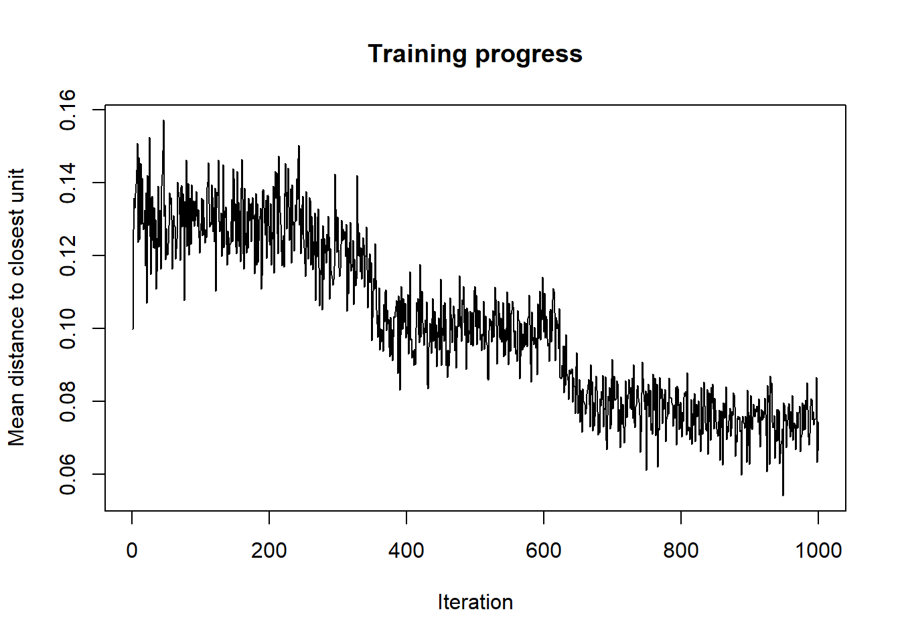
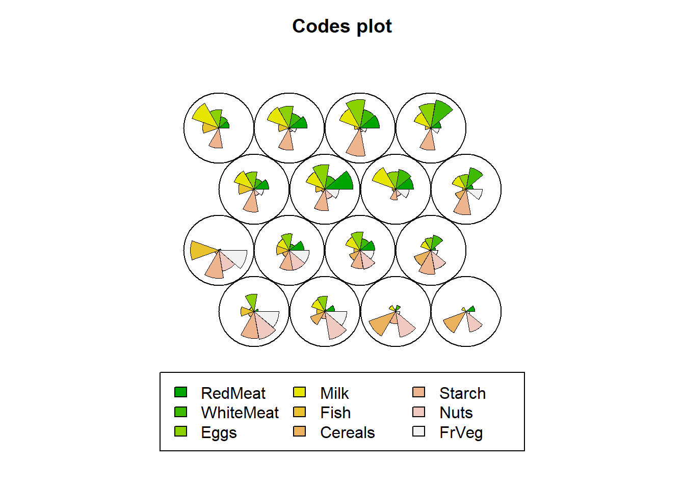

Chapter 4 Self Organising Maps
4.2 Dataframe to Matrix Format
We will be working with the protein dataset. First import the dataset into your environment:
protein <- read.csv("C:/Users/01438475/Google Drive/UCTcourses/STA3022F/Practicals/2017/prac6 Cluster MDS/protein.csv")
head(protein)## Country RedMeat WhiteMeat Eggs Milk Fish Cereals Starch Nuts FrVeg
## 1 Albania 10.1 1.4 0.5 8.9 0.2 42.3 0.6 5.5 1.7
## 2 Austria 8.9 14.0 4.3 19.9 2.1 28.0 3.6 1.3 4.3
## 3 Belgium 13.5 9.3 4.1 17.5 4.5 26.6 5.7 2.1 4.0
## 4 Bulgaria 7.8 6.0 1.6 8.3 1.2 56.7 1.1 3.7 4.2
## 5 Czechoslovakia 9.7 11.4 2.8 12.5 2.0 34.3 5.0 1.1 4.0
## 6 Denmark 10.6 10.8 3.7 25.0 9.9 21.9 4.8 0.7 2.4The first column includes the name of the country which will not be used in SOMs. The features that are provided in 2-10 columns are used for clustering the protein.
Data needs to be centered and scaled to give them equal importance during the SOM training process. Consider if your data needs standardization/normalization.
Then we need to change the data frame with training data to a matrix.
4.3 SOM Algorithm
We will create a 4x4 hexagonal grid. The alpha learning rate, is a vector of two numbers indicating the amount of change. Default is to decline linearly from 0.05 to 0.01 over rlen updates where rlen is the number of times the complete data set will be presented to the network, i.e. number of iterations.
som_grid <- somgrid(xdim = 4, ydim=4, topo="hexagonal")
set.seed(7)
som_model <- som(data_matrix,grid=som_grid,
rlen=1000,
alpha=c(0.05,0.01),
keep.data = TRUE
)
names(som_model)## [1] "data" "unit.classif" "distances" "grid"
## [5] "codes" "changes" "alpha" "radius"
## [9] "user.weights" "distance.weights" "whatmap" "maxNA.fraction"
## [13] "dist.fcts"4.4 A. Visualisation - Map Weights onto Colors
4.4.1 Vis - 1) Training Process
As the SOM training iterations progress, the distance from each node’s weights to the samples represented by that node is reduced. Ideally, this distance should reach a minimum plateau. This plot option shows the progress over time. If the curve is continually decreasing, more iterations are required.

4.4.2 Vis - 2) Node Counts
The Kohonen packages allows us to visualise the count of how many samples are mapped to each node on the map. This metric can be used as a measure of map quality - ideally the sample distribution is relatively uniform. Large values in some map areas suggests that a larger map would be benificial. Empty nodes indicate that your map size is too big for the number of samples. Aim for at least 5-10 samples per node when choosing map size. The empty nodes can also represent cluster boundaries.
Here the lighter colour areas represent nodes with more observations mapped onto them. Darker colours (red) represent nodes with higher numbers of represented observations. It is possible to inverse this colour representation if it is found to be somewhat confusing.
Each node in the hexagonal grid has a number, the numbering of the nodes start from the very bottom left, node 1, and continues with node 2 towards right, after each row, the numbering continues from the left to right.
4.4.3 Vis - 3) Neighbour Distance
The neighbour distances represent natural cluster formations. It is useful to examine the distances of each node where high distances (lighter areas) are the nodes that are very different than its surrounding nodes.
For example in the following plot, we see that Node5 has a large distance to its surrounding neighbours.
4.4.4 Vis - 4) Codes / Weight vectors
Code vectors are provided as a fan-type plot, where each fan is representing a variable that was used for SOM. The dimensions of the fan is simply the representation of the average variable per node calculated by the observations variable values that are mapped onto that node. A node with a big fan pie shows that observations with high values of that variable are mapped onto that node.
For example, the fourth node has countries with very little redmeat, whitemeat, and eggs consumption indicating that the protein consumption of these countries mapped onto Node 4 is very low compared to others.

4.4.5 Vis - 5) Heatmaps
With the following plots, one can examine the distribution of each and every individual variable among the grid nodes.
codes=som_model$codes[[1]]
par(mfrow=c(3,3))
for(i in 2:10){
plot(som_model, type = "property", property = codes[,i-1], main=names(protein)[i])
}## null device
## 1Looking at this plot, one can clearly see that the nodes on the right side of the grid include countries with low fish protein consumption.
4.5 B. Clustering
After creating the codes vectors, which is simply the average of all the countries that are mapped onto the same node, one can apply a cluster analysis using these averages (or in other words the code vectors) to cluster the kxl nodes. If you have created a 4x4 grid (a grid with 4x4 nodes), then there will be 16 nodes to be clustered using these code vectors.
First we can examine the elbow plot to determine the number of clusters we might generate using the nodes.
data <- som_model$codes[[1]]
wss <- (nrow(data)-1)*sum(apply(data,2,var))
for (i in 2:10) {
wss[i] <- sum(kmeans(data, centers=i)$withinss)
}
plot(wss, type = "o")Use hierarchical clustering to cluster the codebook vectors with 6 clusters.
Plot these results:
plot(som_model, type="mapping", labels=protein$Country,
main = "Clusters", cex = .5)
add.cluster.boundaries(som_model, som_cluster)add background colors to units according to their predicted class labels
pretty_palette <- c("#1f77b4", '#ff7f0e', '#2ca02c', '#d62728', '#9467bd', '#8c564b', '#e377c2')
plot(som_model, type="quality")plot(som_model, type="mapping", labels=protein$Country,
bgcol = pretty_palette[som_cluster], cex=.8)
som_model$unit.classif## [1] 4 16 15 4 12 13 16 13 10 2 8 15 2 16 13 12 5 3 1 13 11 10 8 16 3# get vector with cluster value for each original data sample
cluster_assignment <- som.hc[som_model$unit.classif]
# for each of analysis, add the assignment as a column in the original data:
protein$cluster <- cluster_assignment
protein$whichnode <- som_model$unit.classif
head(protein[,c(1,11)],20)## Country cluster
## 1 Albania 3
## 2 Austria 5
## 3 Belgium 5
## 4 Bulgaria 3
## 5 Czechoslovakia 4
## 6 Denmark 5
## 7 E Germany 5
## 8 Finland 5
## 9 France 6
## 10 Greece 2
## 11 Hungary 4
## 12 Ireland 5
## 13 Italy 2
## 14 Netherlands 5
## 15 Norway 5
## 16 Poland 4
## 17 Portugal 1
## 18 Romania 3
## 19 Spain 1
## 20 Sweden 5